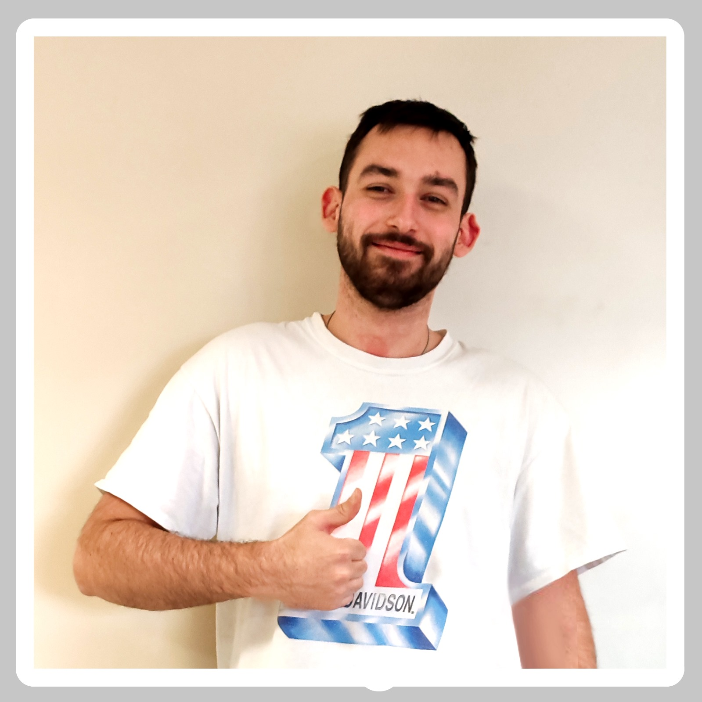

NIS2
NIS2
NIS2 - Project Work secondo anno
Supporto tecnico su realNIS: ambiente condiviso, flusso Git e collaborazione in team.
Apri dettagli Homelab
Homelab
Homeserver
Ambiente domestico per self-hosting, test di rete, servizi Linux e sperimentazione continua.
Leggi articolo
MapSticker Map
Mappa interattiva per raccogliere e visualizzare i luoghi in cui compaiono i miei sticker.
Apri dettagli Linux
Linux
Project Work primo anno
Automazione di share, utenti e permessi Samba partendo da dati strutturati in CSV.
Apri dettagliStampa 3D
Prototipi e oggetti funzionali progettati, stampati e rifiniti in base a esigenze pratiche.
Apri dettagli Web
Web
Ristorante La Bastia
Sito vetrina completo per un ristorante, curato dalla struttura frontend alla pubblicazione.
Apri dettagli Prototype
Prototype
Vibe Coding
Piccoli prototipi web realizzati velocemente per validare idee, layout e interazioni.
Apri dettagli